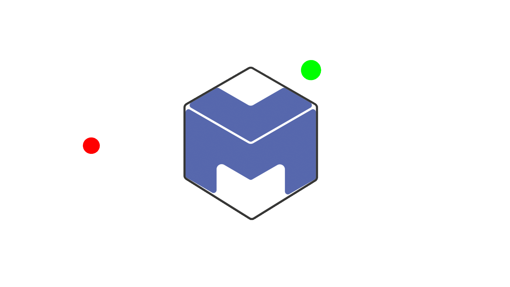

Education as a path to build better humans
Our approach key benefits:
-
Practical application: S.T.E.A.M. methodology emphasizes the practical
application of knowledge and skills, and our business has used this
approach to develop real-world solutions that solve complex problems.
By working with us, clients can benefit from our practical and
solution-focused approach.
-
Interdisciplinary expertise: Our business has expertise in multiple
disciplines, including science, technology, engineering, arts, and
mathematics. This allows us to approach problems from different angles
and come up with unique solutions that might not be possible with a
single-discipline approach.
-
Innovation: S.T.E.A.M. methodology encourages innovation and
creativity, and our business has used this approach to develop
cutting-edge products and services that meet the needs of modern
businesses. By working with us, clients can tap into our culture of
innovation and benefit from our expertise in this area.
-
Cost-effectiveness: The S.T.E.A.M. approach encourages efficiency and
cost-effectiveness, and our business has used this approach to develop
solutions that are not only effective but also affordable. By working
with us, clients can benefit from our ability to develop
cost-effective solutions that don't compromise on quality.
-
Future-focused: The S.T.E.A.M. approach is future-focused, and our
business has used this approach to develop solutions that are
forward-thinking and can adapt to the changing needs of the market. By
working with us, clients can benefit from our ability to anticipate
and respond to emerging trends and technologies.